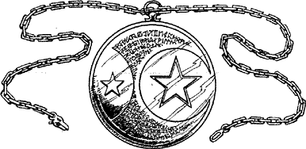

229
You pass the time prior to your departure resting and reviewing the mission in fine detail. Eventually the hour of your leaving arrives and Banedon and Rimoah escort you to Toran harbour and see you safely aboard the caravel Intrepid. Before they disembark, Banedon hands you a sealed envelope and a Golden Amulet on a chain.
‘Wear this for your protection,’ he says, as he fastens the chain around your neck. ‘It will keep you safe from the heat and poisonous atmospheres that pervade your destination.’ (Mark the Golden Amulet on your Action Chart as a Special Item—you need not discard another item in its favour if you already carry the maximum quota.)
{kind=link}

‘And the envelope?’ you say, quizzically.
‘Neither Captain Borse, nor his volunteer crew, are aware of your identity or the vital nature of your voyage. All they know is that they are expected to break through the blockade and carry you safely to Durenor. When you are clear of the enemy, hand this envelope to the captain. It contains his new orders to steer a course for the Aarnak Estuary. He is a fine captain: you can trust in his skill and the bravery of his crew to see you through the dangerous waters of the Kaltersee.’
Moments later the captain emerges from his cabin. A grey and grizzled old seaman, he sports a leather cloak that swings easily from his broad, muscular shoulders. He welcomes you aboard with a ready smile and firm handshake, and then excuses himself in order to supervise the final preparations for the voyage. ‘May the Gods Kai and Ishir watch over you, Lone Wolf,’ whispers Lord Rimoah, as he and Banedon make ready to disembark, ‘and grant us a lasting victory over the forces of darkness.’